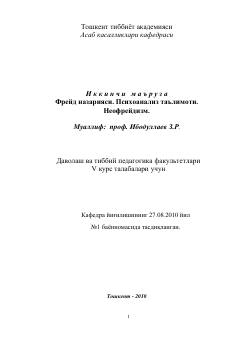

FNZigmund Freydning psixoanaliz nazariyasi va uning asosiy tushunchalari haqida ilmiy ma'ruza.
Ushbu asar Z.R. Ibodullayev tomonidan tibbiyot oliy o'quv yurtlari talabalari uchun tayyorlangan ma'ruza matni bo'lib, unda Zigmund Freydning psixoanaliz nazariyasi va neofreydizm oqimlari yoritilgan. Kitobda ongsizlik tushunchasi, shaxsning psixologik tuzilmalari (id, ego, super-ego) hamda psixoseksual rivojlanish nazariyasi ilmiy nuqtai nazardan tahlil qilinadi.